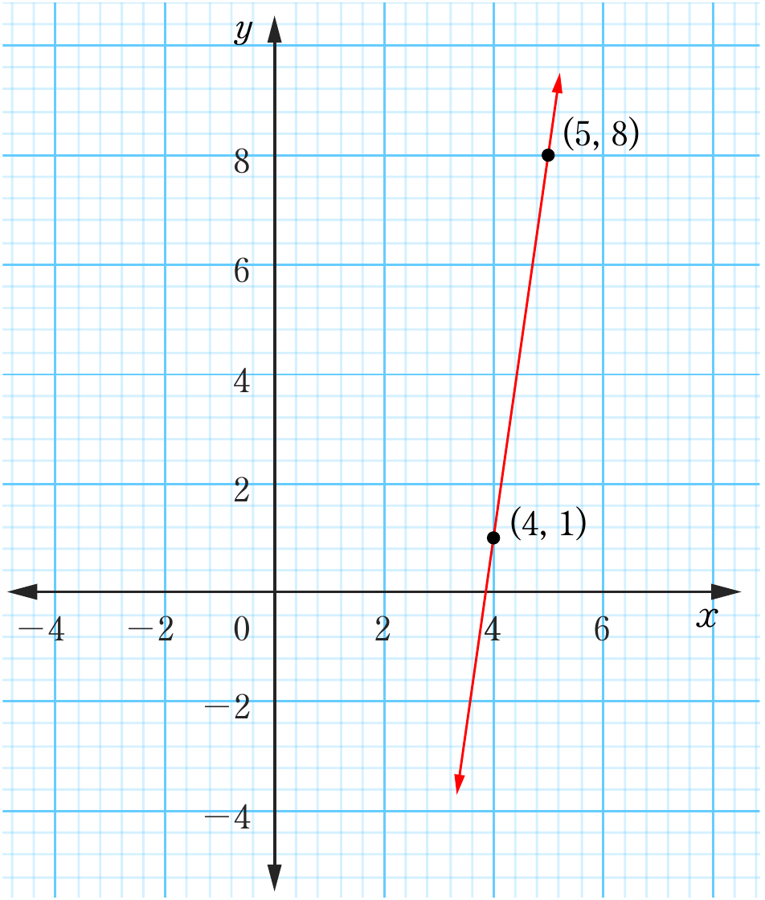
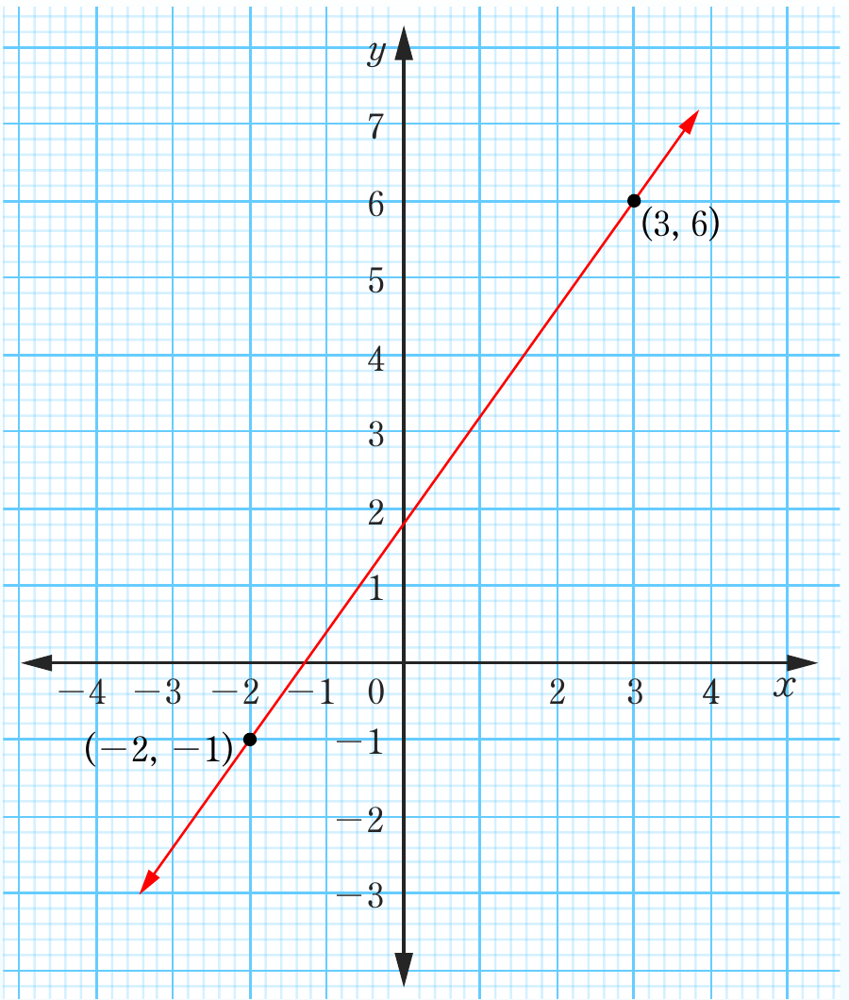

(b)

Gradient is positive
(c)

Gradient is positive
Two coordinate graphs labeled (b) and (c) showing lines with positive gradient. In graph (b), a steep line passes through the points (4, 1) and (5, 8). In graph (c), a line passes through the points (-2, -1) and (3, 6). Both are labeled “Gradient is positive.”